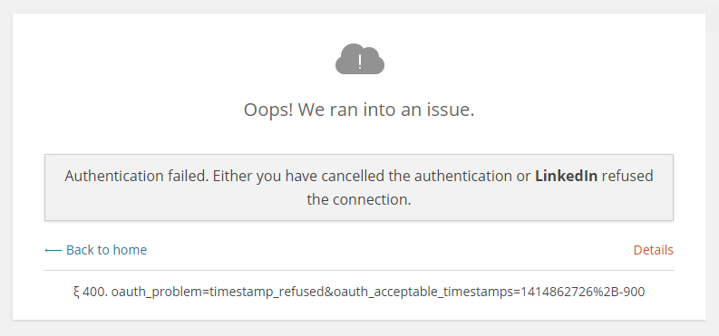
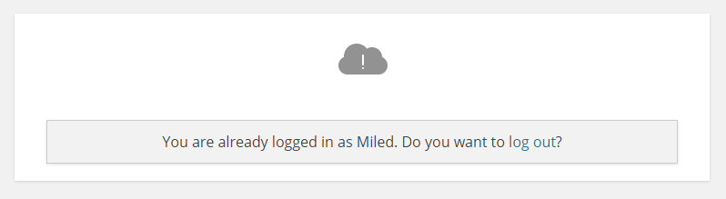

Common issues Troubleshooting
First thing to do when you have an issue with the plugin is to always run WordPress Social Login Diagnostics. WSL Diagnostics is small tool that check for the common issues and for the minimum system requirements.

If WordPress Social Login Diagnostics didn't detect any issue, yet the plugin still not working, then here you may find a list of the common issues some users have experienced and how to solve them.
Head-up This guide may get technical at some points. Unless you feel comfortable editing scripts, please avoid that. When in doubt, ask your web host for assistance.
Widget doesn't show up
WSL is plugin for authentication and thus, its Widget will only show up for NON connected users. However there's few cases where the Widget may not display as expected:
- In case you are using a caching plugin on your website, you might need to empty the cache for any change to take effect.
- Adblock Plus users with “antisocial filter” enabled may not see the providers icons.
- Some themes do not play by the rules and do not integrate the default WordPress hooks.
- Some sophisticated plugins like WooCommerce, WP e-Commerce, Easydigitaldownloads and others have their own login pages and in these cases WSL needs to be integrated through hooks. Refer to those plugins documentations to see if it's possible to extend them, or feel free to ask the Community for Support.
Authentication Error
WSL have two type of errors :
- Authentication errors due to issues with social networks apis (example to the left).
- Logic and application errors. Those are simple notices and usually used by Bouncer (example to the right).
|  |  |
While the notices messages are straightforward and self explanatory, the other ones (authentication errors due issue with social networks apis) can be a bit tricky to understand since they are a technical.
If you did encounter an Authentication Error, first click on Details to know what a social network is complaining about. Next, use Common sense and Google, or ask the Community for Support.
Here's a few of those errors, and what they mean:
The session identifier is missing: This is a session error. See section below.Your application key and secret are required: You did not setup your application credentials. See Networks Setup.Could not establish connection to provider API: Request rejected or Network failure. Usually happen when the social network api is over capacity due to hight traffic.Authentication failed! Your server time is not in sync with..: Happen when web server clock is incorrect. The solution is to make a trouble ticket with your web host to set the correct time.Failed to validate oauth signature and token: Usually happen when your app credentials are wrong or when your web server clock is out of sync.oauth_problem=timestamp_refused..: Your web server clock is out of sync.oauth_problem=consumer_key_refused..: Your application credentials are wrong. Check your application key for extra spaces, and the like.oauth_problem=consumer_key_rejected..: Usually means there is a mismatch between the application key and secret.oauth_consumer_key not recognized..: Your application credentials are wrong.
Session Error
If you did encounter The session identifier is missing or You cannot access this page directly, it means that PHP sessions are not working as expected by WSL on your web server. This issue may have many reasons:
-
File permissions.
If you see an error
Warning: session_start() [function.session-start]: open(/tmp/sess_...on the top of this page or in the Error log file, then most likely because of a file permissions problem. The solution is to make a trouble ticket with your web host.For advanced users: alternatively, you can create the sessions folder in your root directory, then add
session_save_path('/path/to/writable/folder')at the top of the following files:wp-config.php wp-content/plugins/wordpress-social-login/wp-social-login.php wp-content/plugins/wordpress-social-login/hybridauth/index.php
-
WP Engine hosted site.
In this case refer this topic: https://wordpress.org/support/topic/500-internal-server-error-when-redirecting.
-
A reverse proxy like Varnish or caching engine is stripping sessions cookies.
Some web hosts, like WP Engine, might be using sophisticated caching systems which may prevent WSL from working as expected. The solution is to make a trouble ticket with your web host and ask them to white-list these urls:
wp-login.php wp-content/plugins/wordpress-social-login/hybridauth/
For advanced users who are using Varnish, they may edit their VLC script. (This solution is by Boris Kuzmanovic).
# Do not cache WSL endpoints urls if (req.url ~ "^/wp-content/plugins/wordpress-social-login/hybridauth/\?"){ return (pass); } -
Your web host have purposely disabled PHP's SESSION.
Some web hosts may disabled PHP's SESSION on purpose. First you need to check if PHP sessions are included into your web hosting plan or basic features, if not, make a trouble ticket with your web host customer support.
-
PHP's SESSION have been renamed.
This one is the least probable one and the hardest to tell unless for someone who know his ways with a web server. It's just listed here, so you know.
When I click on the icons nothing happen.
Most likely an issue with Javascript.
Goto Widget > Advanced Settings and change "Authentication display" to "In Page".
I'm having an infinite loop of redirection when using the popup for authentication
This can be caused when "PHP Register Globals" are On.
The solution is to make a trouble ticket with your web host to disable it, or, if you have a dedicated server and you know what are you doing then edit php.ini file and turn it Off.
After I authenticate with a social network I'm redirected to White Page, or an Error Page.
While Error Pages may advertise what the error might be, White Pages are no fun, simply because they tell absolutely nothing.
First thing to do when you are redirected to a white page, is to check for the HTTP Error you are getting. (In case you are using Google Chrome on Windows, you may hit F12, select Network tab, then hit F5). Once you get the HTTP Error Code, continue reading this guide to know what the error mean and how you may solve it.
404, or 403 HTTP Error.
This issue usually happen when :
There is a .htaccess file who prevent direct access to the WordPress plugins directory.
Your web host uses mod_security to block requests containing URLs (eg. hosts like HostGator, GoDaddy and The Planet).
In any of these two cases, WSL requires this url to be white-listed:
wp-content/plugins/wordpress-social-login/hybridauth/
500 HTTP Error.
500 Internal Server Error is a GENERIC error message, given when an unexpected condition was encountered. This error is mostly caused by a PHP error in the code and to be able to fix the issue causing the internal server error, we MUST know the REAL error message, which is usually stored on an error log file on your web server, otherwise we will be left in the dark about the problem you having.
If you don't know how to get to your web server error log, or if you are not familiar with the process, then refer to this blog post by Wpmudev.org.
- Finding Your Error Logs via FTP
- Finding Your Error Logs in Plesk
- Finding Your Error Logs in CPanel, or watch this Video.
406, 412, or 410 HTTP Error.
These are errors generated by WSL. To each one it's technical meaning, but basically they are all related to PHP sessions (see Session Error, above).
200. Thanks for stopping by!
"200. Thanks for stopping by!" is not an issue. This message shows up when a user attempt to directly access WSL endopint-url without going through the authentication Widget.
WSL endpoint urls, are not supposed to be accessed directly by users nor by web crawlers.